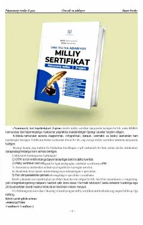

MSOna tili va adabiyot fanidan milliy sertifikat imtihonlariga tayyorlanish uchun namunaviy testlar to'plami.
Ushbu qo'llanma milliy sertifikat va OTM kirish imtihonlariga tayyorlanayotgan abituriyentlar hamda pedagoglar uchun mo'ljallangan namunaviy test topshiriqlarini o'z ichiga oladi. Kitobda BMBA formatiga yaqin bo'lgan diagrammali, integrativ va matnli savollar, shuningdek, ularning javoblari taqdim etilgan.